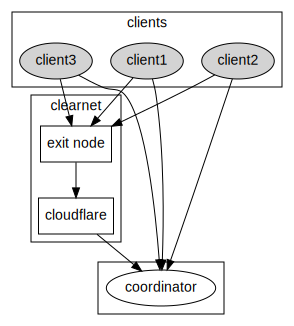
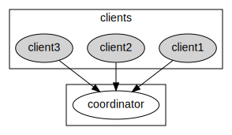
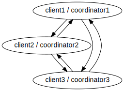

Wasabito plan overview
Simplification
The ito in Wasabito can be read as “Litle” what in practical terms means Wasabi free of unnecessary things. This is why the first thing to do is to simplify the wallet by removing as much things as possible. However, the focus is not on removing unnecessary code but unneccesary “features”.
The process of removing is rather simple and these are the things that have to be done (many were already done):
What we have at the moment:
Remove WW I code
Wasabito doesn’t have any user base and then it doesn’t need to have a smooth transition to WabiSabi. Suporting the two protocols (ZeroLink and WabiSabi) is not good in this context.
Remove Sleep Inhibitor
Wasabito will be a daemon and as such it will run even when the GUI process is not running. On the other hand, preventing a computer to sleep feels unpolite to me.
Remove Single-Instance checker
Similar to the previous point, given it will run as a service, a user can open as many instances of the GUI application as she wants without creating any kind of conflicts because all the resources will be owned/managed by the service.
Remove Terms & Conditions
Service providers can impose restrictions, or add conditions, to the usage of their services but Wasabito is not a service provider; it is a free and open source project.
Remove Legal documents
Same as previous point.
Remove password finder
Passwork Finder is simply a bad joke. It is true that it helped a couple of people in the past to recover their money and as the creator I can only feel proud of that but it has no place in Wasabito. It can be extracted and distributed as a separated tool but it cannot be part of this projects.
Remove ClearNet backup
ClearNet access is only possible when there is a domain name involved so, a SSL connection can be stablished to prevent MitM manipulation. However it still leaks some matadata to the exit node. Another drawback is that you have to have and static IP address, a http server to deal with the HTTPS requests, what also assumes the usage fo HTTP protocol and so on.
Protecting a http server from generic DDoS attacks is very difficult and it can lead us to set an intermediary like Cloudflare with all what that means.

- This is how Wasabi network looks like
Wasabito should be agnostic in terms of network technology and I assume the most common setup would be as an onion service.

- This is the first goal
Last, the absolutely final goal should be to remove the distinction between client and coordinator by making every client a coordinator so you can run your own coordinator at night and mix with the friends that you have in your contact list, and the friends of them.

Remove Wallet backup
Wallet json files backup was introduced in Wasabi many years ago because some wallets got corrupted. That’s something that doesn’t happen anymore but in case we see that again the solution should be to find the problem and fix it.
Remove Kitchen
Kitchen is a component that keeps the password encrypted
in memory. It implicitely assumes that an attacker with access to the
process memory cannot extract the password. That assumption is
incorrect.
Remove USD/BTC rate clients
Displaying/using USD/BTC rate requires to trust on a thrid-party data provider which gain a lot of power over the users. We have seen many times how “errors” in the prices displayed by exchanges (the real source of all the rates) make people to loss lots of money.

- See: Bitcoin price crashed to near $8k on Binance US platform
- see: Bug on Kraken Let Users Buy Bitcoin at Levels Below Market Price
- see: just google it, there are many of these cases
If you provide these rates to your users and they lose money then you will be culprit!
Remove compatibility password/config
Wasabito doesn’t have an userbase and it is not expected to be used by Wasabi users so, it doesn’t make sense to be compatible in this specific topic.
Remove Documentation
Wasabi documentation is completely useless for Wasabito because most of it is HowTos that should be automated.
Remove bitcoind integration
In its envisioned form Wasabito is a p2p software where every client can act as a coordinator, that means that clients need to be able to verify that registered coins are unspent. Also, when not acting as coordinators, clients need to connect to some node for receiving transactions, getting fetching blocks and even for getting fee rates.
Having access to a bitcoin node solves
| Needs | No node | Automatically pruned node | Manually pruned node | Full node |
|---|---|---|---|---|
| Check UTXOs | Yes (RPC) | Yes (RPC) | Yes (RPC) | |
| Receive TXs | Yes (P2P) | Yes (P2P & |
This integration assumes the node is in the same machine and tries to connect with it through rpc and p2p while modifies the original bitcoin.conf file.
It is mostly used by integration testing and while only very few people use it, it only provides blocks and fee estimations.
This commit moves the code useful for testing to the testing project and removes the rest.
- Remove website
Having a website for one specific company as part of the project makes no sense for an FOSS project. On the technical side a website requires a webserver and that’s something we don’t want to have.
- Remove CoordinationFeeRate & Plebs
What’s next
- Remove histogram
It is really hard to improve the Bitcoin Core’s fee estimation algorithm and the usage of the histogram didn’t improve the estimation at all, in fact the need for additional RPC requests makes the system less reliable. This is a cost only feature with zero benefits.
- Remove CrashReport
The only thing users hate more than a crash is a crash followed by a crash report.
- Implement p2p and remove alices/bobs identities
- Extract IndexBuilder
- Create RPC (protobuf)
- Extract Fee Rate providers
- Remove Synchronizer
- Compact filter provider
- Review HandleGzipCompression
- Remoe RuntimeParams
- LateResponse delete
- open logs menus. remove
- Dust threshold only for already used addresses
- Remove dust threshold?
- Ban offending coordinators
- Separate UiConfig again
- Task
- Improve amount organization
- Configure CI
- Password protected wallet
- Create wcli
- Replace MultiWallet by Multi account
- Add coordinator dropbox
- Backup mechanism
- Add database
- Use SigNet instead of TestNet
- Protocol constants by name
- CoinJoinClient process as continuation
- Make the Std, RangeProofs a function of liquidity